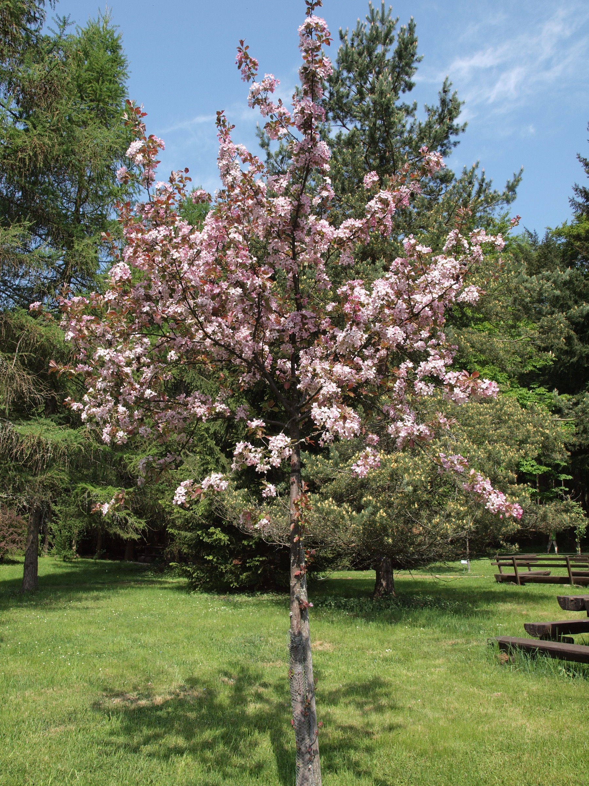
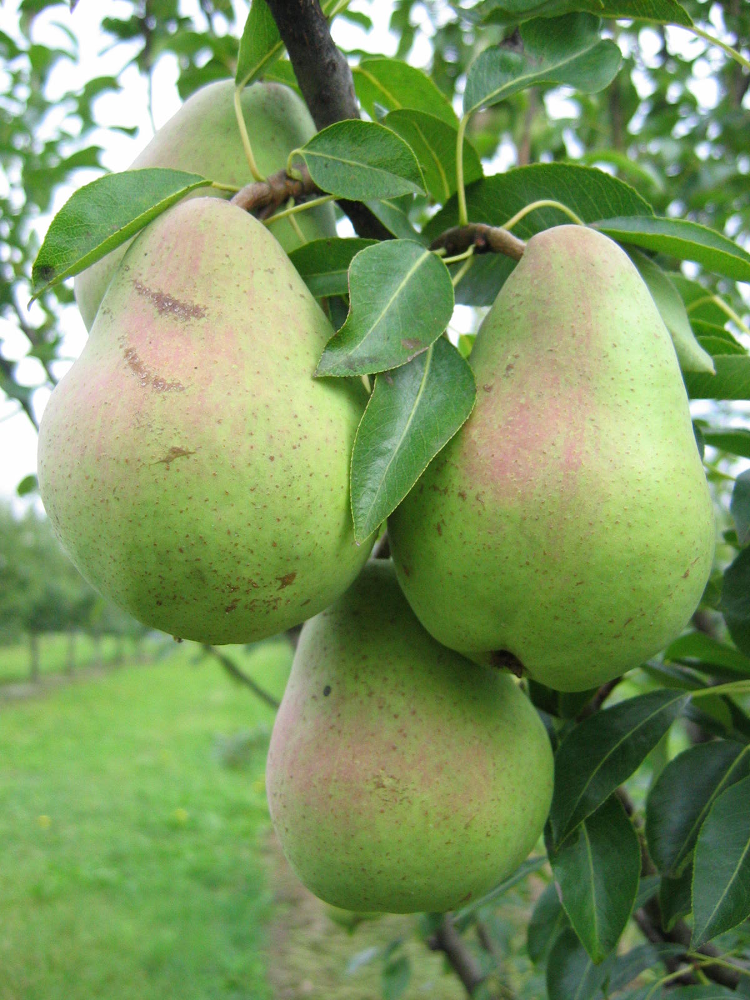
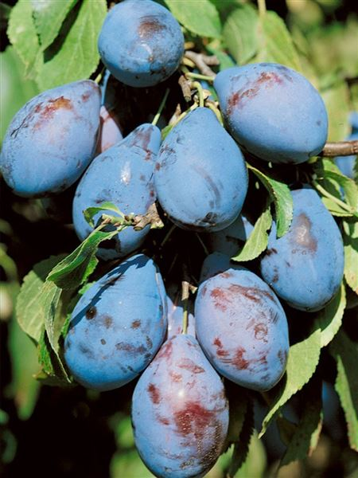
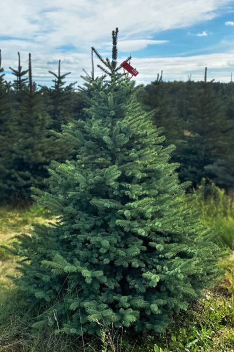
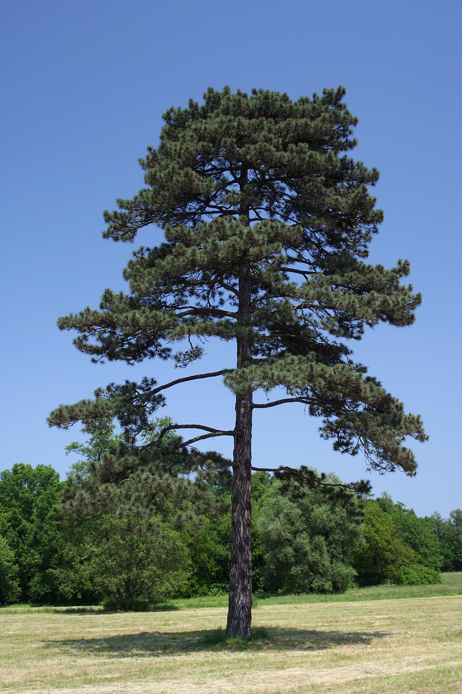

Listnaté stromy

Jabloň Letní
Šťavnatá a sladká odrůda ideální pro vaši zahradu.
Cena: 350 Kč

Hrušeň Podzimní
Odolná odrůda s vynikající chutí a dlouhou trvanlivostí.
Cena: 400 Kč

Švestka Modrá
Tradiční česká odrůda s bohatou úrodou.
Cena: 380 Kč
Jehličtnaté stromy

Smrk
Krásný strom na okrasu pro vaší zahradu.
Cena: 500 Kč

Modřín
Odolná odrůda s vynikající chutí a dlouhou trvanlivostí.
Cena: 400 Kč

Borovice
Tradiční česká odrůda s bohatou úrodou.
Cena: 380 Kč